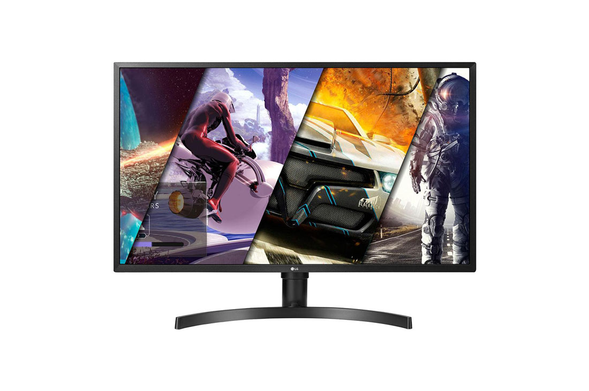

UHD Monitor Leírása

Az UHD felbontást nevezhetjük az "átlagfelhasználók 4K-jának", de azért nem árt tisztázni, hogy miről is van
szó. Ezt a felbontást az átlagfelhasználóknak készített termékek (főként televíziók) használják és ennek
megfelelően azon tartalmak is, amelyeket ilyen készülékeken egy átlagfelhasználó fogyasztani szokott. 3,840 x
2,160 pixelről beszélünk, vagyis a számokat illetően igenis van különbség a 4K-hoz képest, mégis olyan
szolgáltatók használják a 4K jelzést az UHD tartalmakra, mint például a Netflix vagy a Google.